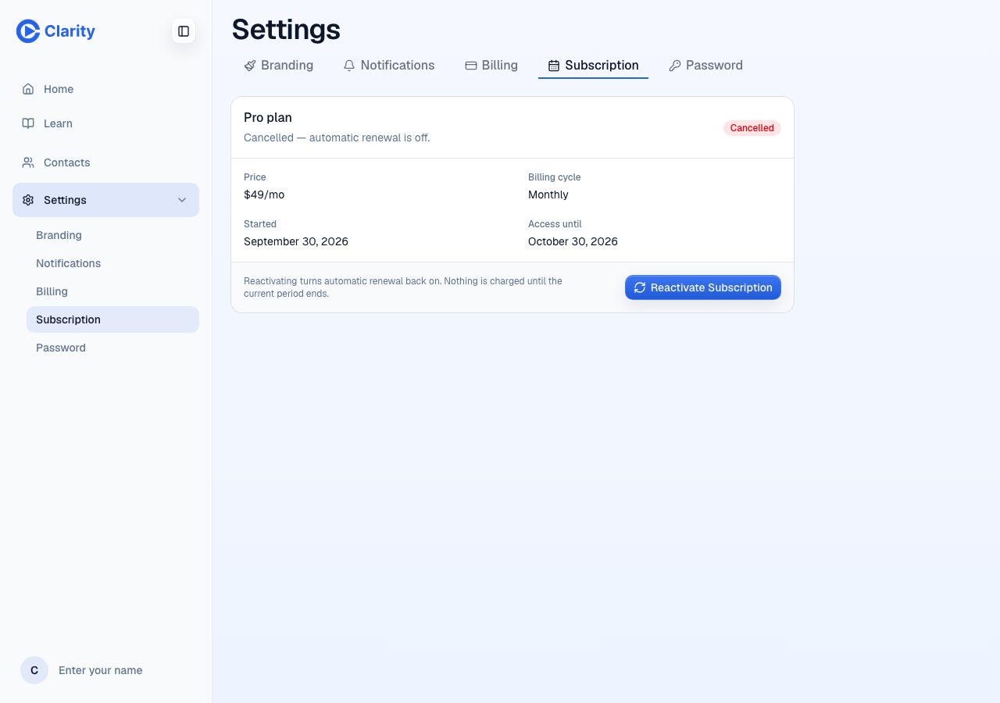
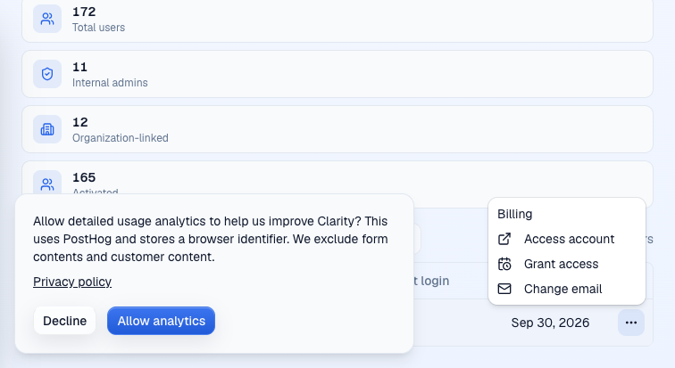
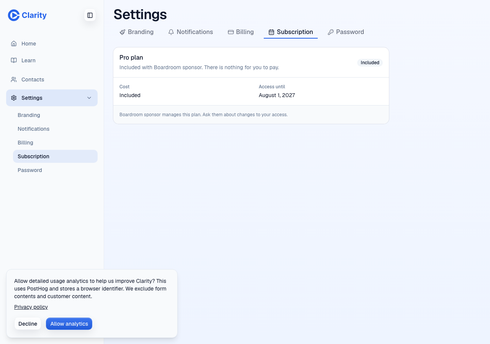
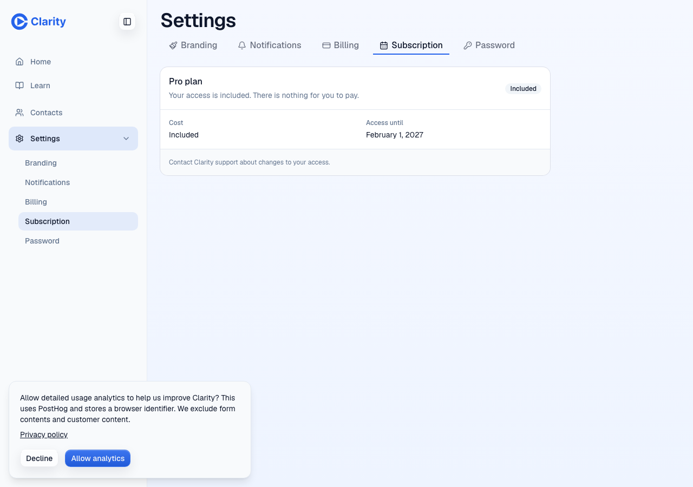

VERIFIED on staging
PR #838 (step 1) and PR #839 (step 3, stacked). Target https://staging.clarity.video at commit 9a9a0b0b, doctor green. Evidence run by the author, then an independent check by a fresh agent: VERIFIED. 2026-09-30.
Checks
| Check | Result | Note |
|---|---|---|
| Migration 0018 backfill on staging | pass | 114 users with an end date, 114 grants (104 trial, 10 complimentary). Applied deliberately with allow_branch_migrations. |
| Signup writes a 14-day trial grant | pass | Both runs: one grant, source signup, ends 14 days after creation. |
| Activate is gone | pass | Row menu shows Billing, Access account, Grant access, Change email. POST /activate is 404. |
| Grant access through the admin dialog | pass | Complimentary (author run) and Included with payer (independent run) through the real UI. One grant row and one audit row with before walled, after allowed. users.kind and expiration_date unchanged. |
| End of day in Los Angeles | pass | Dec 31 stored as 2027-01-01T07:59:59.999Z; Nov 15 as 2026-11-16T07:59:59.999Z. |
| Replay and refusals | pass | Same command id returns the stored result and writes nothing, also under three parallel requests; reuse on another account is 409. Past date, missing note, payer rules and bad input are 400. |
| Walled user takedown | pass | Edit and publish 402. Set private 200, then the public link 404. Delete page 200, delete tree node 200. App shell redirects to /trial-expired. Control: the same request on main returned 402. |
| Grant restores access | pass | App shell and page edits return 200 after the grant. |
| Stripe events do not erase a grant | pass (partial) | Test-mode checkout, then cancel at period end in the portal: grants, kind and date unchanged. An immediate-delete event was not produced; unit-tested only. |
| Paid then comped customer screen | pass after fix | Found by the independent check: showed "Cancelled, access until" the period end with Reactivate. Fixed in 9a9a0b0b; now shows included access until Feb 1, 2027, no Reactivate. |
| Access dates by time zone | pass after fix | Showed a day late east of Los Angeles. Now formatted in Los Angeles; same date in LA and Stockholm. |
| /boardroom noindex | pass | robots noindex on staging; /tony has none. Sitemap: staging serves no sitemap, so the check ran against branch source (7 entries, no /boardroom). |
| Impersonated billing write is 403 | not run live | Needs a WorkOS dashboard impersonation session. Unit-tested. |
| Staging critical e2e suite | pass | 2 of 2 at 15c31c30 and again at 9a9a0b0b. |
| Root pnpm test, lint, typecheck, LOC ratchet | pass | Editor 2,496 tests, router 53, workspace-tree 171. Test type errors 275, budget lowered from 310. |
| Console and network | pass | Every failed request and console error is a deliberate refusal probe (400, 404, 409). No app errors. |
Before and after: paying customer moved to free


Screenshots



Screenshots showing test account email addresses (the Grant access dialog, the save notice, the Stripe portal) stay in the local evidence folders and are not published here.
Environment notes
The scheduled "Staging Follows Main" workflow redeployed main to staging at 08:55Z, mid-run. The independent check caught it, redeployed the branch and re-ran everything. Fixture accounts created by this run stay on staging as test data.